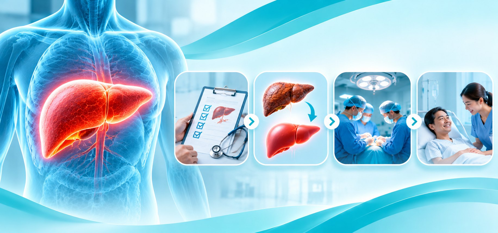

Hati bisa mengalami kerusakan bertahun-tahun tanpa menimbulkan gejala yang jelas. Ketika mata mulai menguning, perut membesar, atau kesadaran terganggu, penyakit hati mungkin sudah memasuki tahap serius.
Namun, apakah setiap kerusakan hati berakhir dengan transplantasi? Kapan pengobatan masih memungkinkan, dan mengapa India menjadi salah satu destinasi untuk prosedur liver transplant?
1. Gejala Kerusakan Hati yang Tidak Boleh Diabaikan
Hati memiliki lebih dari 500 fungsi penting, termasuk membantu metabolisme, memproses zat berbahaya, menghasilkan protein pembekuan darah, dan memproduksi empedu.
Ketika hati mengalami kerusakan, gejalanya bisa berkembang secara bertahap.
Gejala awal yang sering tidak disadari:
- Mudah lelah meskipun tidak melakukan aktivitas berat.
- Nafsu makan menurun, mual, dan berat badan berkurang.
- Rasa tidak nyaman pada perut bagian kanan atas.
- Kulit terasa gatal tanpa penyebab yang jelas.
Gejala yang dapat menandakan gangguan hati lebih serius:
- Jaundice: mata dan kulit menguning akibat peningkatan bilirubin.
- Ascites: perut membesar akibat penumpukan cairan.
- Edema: kaki dan pergelangan kaki membengkak.
- Perdarahan: mudah memar, muntah darah, atau BAB hitam.
- Hepatic encephalopathy: gangguan fungsi otak yang dapat menyebabkan kebingungan, perubahan perilaku, hingga penurunan kesadaran.
Tidak semua gejala tersebut disebabkan penyakit hati. Namun, kombinasi beberapa tanda membutuhkan pemeriksaan medis.
2. Kapan Harus ke Dokter?
Jangan menunggu sampai seluruh gejala muncul.
Jika mengalami kelelahan berkepanjangan, penurunan nafsu makan, atau memiliki riwayat hepatitis B/C, sebaiknya lakukan pemeriksaan ke dokter.
Periksakan diri pada hari yang sama apabila mata atau kulit baru menguning, perut membesar dengan cepat, atau pasien sirosis mengalami demam dan nyeri perut.
Segera ke IGD jika terjadi muntah darah, BAB hitam seperti aspal, kebingungan mendadak, atau penurunan kesadaran.
Dokter dapat merekomendasikan pemeriksaan fungsi hati, bilirubin, albumin, INR, hepatitis B/C, USG, FibroScan, hingga CT scan atau MRI jika diperlukan.
Tujuannya bukan sekadar mengetahui apakah hati rusak, tetapi menilai seberapa baik hati masih berfungsi dan apakah kerusakannya sudah menimbulkan komplikasi.
3. Apakah Kerusakan Hati Masih Bisa Diobati?
Tidak semua pasien penyakit hati membutuhkan transplantasi.
Pengobatan sangat bergantung pada penyebab dan tingkat keparahan penyakit.
Pada hepatitis B atau C, terapi antivirus dapat membantu mengendalikan atau mengatasi infeksi. Pada penyakit perlemakan hati, pengelolaan berat badan, diabetes, dan metabolisme menjadi bagian penting dari penanganan.
Sementara pada sirosis, dokter dapat memberikan obat untuk menangani penumpukan cairan, mencegah perdarahan, atau mengatasi komplikasi lainnya.
Tetapi ada perbedaan besar antara mengendalikan komplikasi penyakit hati dan memulihkan fungsi hati yang sudah mengalami kegagalan berat.
Ketika pengobatan tidak lagi mampu mempertahankan fungsi organ secara memadai, evaluasi transplantasi dapat diperlukan.
4. Kapan Transplantasi Hati Menjadi Pilihan?
Transplantasi hati dapat dipertimbangkan pada beberapa kondisi:
- Sirosis dekompensata. Ketika sirosis mulai menyebabkan komplikasi seperti ascites, perdarahan varises, atau gangguan kesadaran.
- Gagal hati akut berat. Ketika fungsi hati memburuk secara cepat, bahkan pada seseorang yang sebelumnya tidak memiliki penyakit hati kronis.
- Kanker hati tertentu. Pada pasien yang memenuhi kriteria medis khusus untuk transplantasi.
Dokter biasanya menggunakan pemeriksaan klinis, laboratorium, dan sistem penilaian seperti MELD untuk membantu menentukan tingkat keparahan serta kebutuhan evaluasi transplantasi.
Penting dipahami bahwa transplantasi bukan otomatis menjadi pilihan terakhir setelah semua pengobatan gagal. Pada pasien yang memenuhi indikasi, rujukan lebih awal dapat memberikan waktu untuk evaluasi dan perencanaan yang lebih baik.
5. Mengapa India Menjadi Destinasi Liver Transplant?
India memiliki sejumlah pusat transplantasi hati yang menangani pasien dewasa maupun anak-anak, termasuk prosedur kompleks menggunakan donor hidup.
Ada tiga alasan utama mengapa India layak dipertimbangkan.
Pertama, pengalaman tim transplantasi. Rumah sakit tertentu memiliki program khusus yang melibatkan ahli bedah transplantasi, hepatolog, anestesi, intensive care, dan tim perawatan pascaoperasi.
Kedua, Living Donor Liver Transplant. Prosedur ini menggunakan sebagian hati dari donor hidup yang memenuhi syarat. Hati memiliki kemampuan regenerasi, sehingga bagian hati yang tersisa pada donor dan bagian yang diterima pasien dapat tumbuh kembali.
Namun, donor dan penerima harus menjalani evaluasi medis ketat. Pasien asing juga wajib memenuhi persyaratan hukum dan persetujuan transplantasi yang berlaku di India.
Ketiga, biaya yang relatif kompetitif. Dibandingkan sejumlah negara dengan biaya layanan kesehatan tinggi, India dapat menawarkan alternatif biaya transplantasi yang lebih terjangkau.
Tetapi biaya akhir tetap bergantung pada kompleksitas kasus, evaluasi donor, operasi, ICU, komplikasi, obat-obatan, dan lama perawatan.
Memilih rumah sakit transplantasi tidak cukup hanya berdasarkan harga. Pengalaman tim, hasil klinis, fasilitas ICU, dan rencana perawatan setelah pasien kembali ke Indonesia sama pentingnya.
6. Apa yang Perlu Dipersiapkan Sebelum Berobat ke India?
Sebelum menghubungi rumah sakit transplantasi, keluarga sebaiknya menyiapkan:
- Ringkasan diagnosis dan riwayat pengobatan.
- Hasil pemeriksaan darah dan fungsi hati terbaru.
- Hasil USG, CT scan, MRI, atau FibroScan jika tersedia.
- Riwayat komplikasi dan rawat inap.
- Informasi calon donor hidup, apabila ada.
Dokumen tersebut dapat membantu tim medis melakukan peninjauan awal dan menentukan pemeriksaan tambahan yang dibutuhkan.
Perlu diingat, pasien yang kondisinya tidak stabil harus mendapatkan penanganan segera di rumah sakit terdekat sebelum mempertimbangkan perjalanan internasional.
7. Eagle Go Health: Exploring Liver Treatment Options in India
Menghadapi penyakit hati berat bukan hanya persoalan menemukan rumah sakit. Keluarga juga perlu memahami pilihan pengobatan, persyaratan donor, estimasi biaya, dan perawatan jangka panjang.
Eagle Go Health membantu pasien dan keluarga mengeksplorasi layanan medis internasional di India, termasuk koordinasi peninjauan dokumen medis, komunikasi dengan rumah sakit, dan persiapan perjalanan pengobatan.
Tidak semua pasien membutuhkan transplantasi, dan tidak semua pasien memenuhi kriteria untuk menjalani prosedur tersebut.
Karena itu, langkah pertama selalu dimulai dari evaluasi medis yang tepat.
Your Health. Your Options. Your Journey.
Contact Eagle Go Health to explore your treatment options in India.
Disclaimer: Artikel ini bersifat edukatif dan tidak menggantikan konsultasi dokter. Keputusan medis, kelayakan transplantasi, serta persetujuan donor ditentukan oleh tim medis dan otoritas berwenang.
Artikel ini untuk edukasi kesehatan dan tidak menggantikan konsultasi dengan dokter. Keputusan pengobatan tetap diambil bersama tim medis yang menangani.